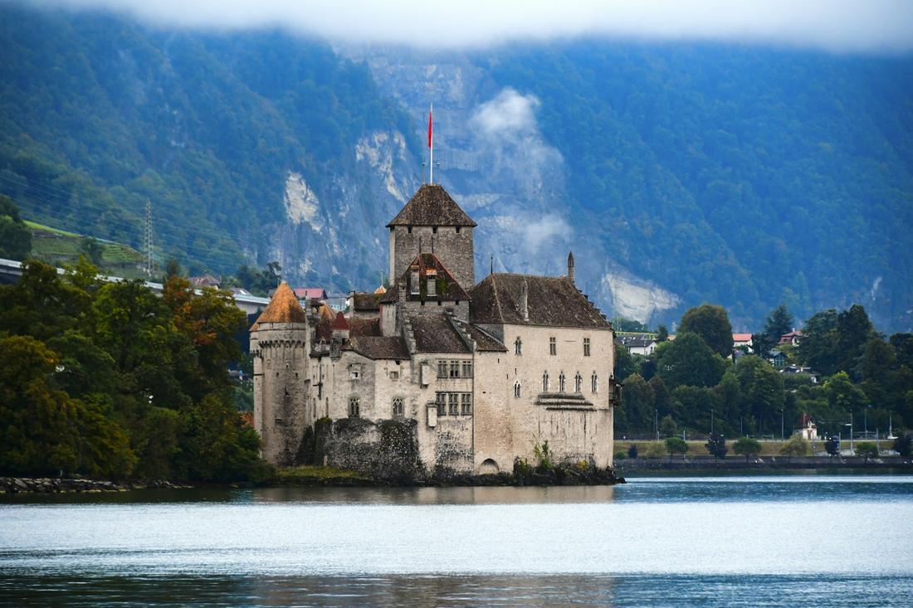
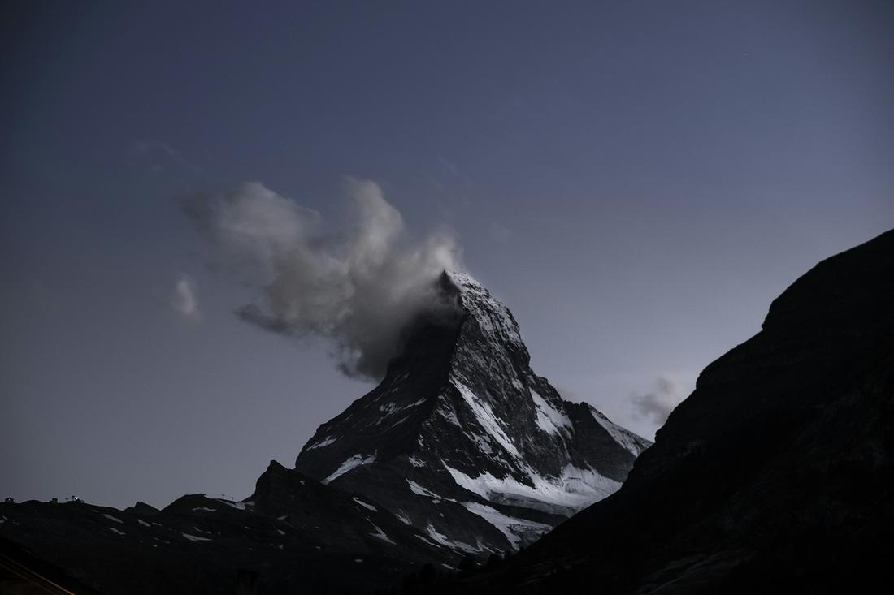

Alpine peaks, glass-walled trains, and lakeside castles — Switzerland is scenery you'll never stop talking about.
If you've ever seen a photo of a snow-capped peak reflected in a perfectly still lake and thought, 'that can't be real,' I promise you, it is — and it's Switzerland. This is a country where the trains run so precisely and scenically that riding one is considered a bucket-list activity all its own, where villages tuck themselves into valleys beneath waterfalls, and where you can have breakfast in a medieval old town and be standing on a glacier by lunch. As your travel advisor, I get genuinely giddy planning Swiss itineraries.
What makes Switzerland special for my clients is how effortlessly it delivers both jaw-dropping nature and old-world elegance in the same trip. You can go from a cogwheel train climbing above the clouds to sipping hot chocolate in a lakeside cafe in the same afternoon, all connected by a rail network that's practically a national treasure. It's romantic for couples, awe-inspiring for first-time visitors, and endlessly photogenic no matter the season.
The trick with Switzerland is knowing which regions to combine so you're not just chasing your tail across the map — and that's exactly what I do for every client. Here are 3 excursions I love arranging for travelers headed to Switzerland.

This is the classic Swiss Alps day I build for almost every first-time client, and it never gets old. You'll base yourself in Interlaken, the gateway town wedged between two impossibly blue lakes, and ride the mountain railway up through Grindelwald toward Jungfraujoch — nicknamed the 'Top of Europe' and one of the highest railway stations on the continent. The final approach tunnels straight through rock before depositing you at an observation deck with a jaw-dropping panorama of the Aletsch Glacier, the longest ice river in the Alps, along with the Eiger, Mönch, and Jungfrau peaks towering around you. On the way back down, I love routing travelers through Lauterbrunnen, a narrow green valley so dramatic it's said to have inspired Tolkien's Rivendell, with dozens of waterfalls pouring straight off the cliff walls above traditional Swiss chalets. It's the kind of scenery that makes people go quiet for a second before reaching for their camera. Whether you want one unforgettable day or a slower multi-day version with time to hike the valley floor, I'll build the train timing and lodging around exactly how much time you want up in the clouds.

For travelers who want their scenery delivered through a window while they sit back with a coffee, this is the one I recommend. The GoldenPass Express is a panoramic train that runs between Lucerne and Montreux, and it's designed specifically for the view — the seats swivel and the glass stretches overhead so you catch every second of the Alps sliding by, from deep green valleys near Interlaken to the vineyard-covered hills that tumble down toward Lake Geneva. It's one continuous scenic reveal, and it's genuinely one of the most relaxing ways to see the country. I always build the day around ending in Montreux, right on Lake Geneva, where you can walk the flower-lined lakeside promenade and then take a short trip to Chillon Castle — a moated, turreted medieval fortress that rises right out of the water at the lake's edge and is one of the most photographed sites in the country. Between the train and the castle, it's a day that mixes pure alpine drama with old-world romance, and it's an easy add-on whether you're doing a quick Swiss loop or a longer multi-country European itinerary.

There's a reason the Matterhorn is the mountain most people picture when they hear the word 'Switzerland' — it's one of the most striking peaks on Earth, a nearly symmetrical pyramid of rock and ice that seems to change personality with every angle and every hour of light. This excursion is built around Zermatt, the car-free alpine village at its base, where I get travelers settled into a chalet-style stay and then send them up the Gornergrat Railway, one of the highest open-air cogwheel trains in Europe, for a ride that climbs straight toward the Matterhorn's face with almost nothing blocking the view. At the top, you're standing amid a ring of 4,000-meter peaks and glaciers with the Matterhorn as the undisputed star of the show — it's the kind of moment that's hard to describe until you've felt the scale of it yourself. Because Zermatt bans combustion cars, the whole village has this quiet, storybook feel even with world-class dining and shopping tucked into its streets. I love this trip for travelers who want a slower, more immersive alpine base rather than a single day trip, whether they're hikers chasing trail views or honeymooners chasing the perfect sunrise photo of the peak turning gold.
Prefer to plan together? I'll build your custom package. Already know what you want? Book instantly through my travel portal.